内容要点
[种草R]家人们👋，今天来给大家分享超简单的LR调色技巧，颜色“混合”工具实战片，轻松把枫叶原图调出不同风格，让春天秒变秋天或夏天🍁，小白也能秒上手，赶紧学起来！ 🌟先来看看案例 图2是枫叶原图，颜色以绿色、橙色、红色为主，整体偏黄绿。图3、图4是调色后的成片。 🎯分析图3：秋天风格 这张图整体偏红橙色，春天的感觉一下子就变成秋天啦🍂。 [种草R]思路：把绿色调为红橙色，去掉其他没用的颜色。 [向右R]回忆一下“混合”工具里“红、橙、黄、绿、青、蓝、紫、洋红”的变色规律：往横条左边拉，颜色就往左边色彩方向变；往右边拉，就往右边色彩方向变。 [彩虹R]实操步骤来咯👇 [向右R]红色、橙色咱要保留，先别动它们 [向右R]要调出红橙色，把黄色往左拉，就变成橙色啦，然后根据自己喜好调整下饱和度和明亮度（图5） [向右R]绿色不要，往左拉向橙色方向调整，加点饱和度，降低明亮度，让它更接近橙色（图6） [向右R]青、蓝、紫图里本来没有，不确定的话，直接把它们饱和度拉到-100（图7） [向右R]洋红图片里没有，不用管，如果有就往右拉，让它变成红色 [向右R]最后再返回去对红色、橙色
知识结构
[种草R]家人们👋，今天来给大家分享超简单的LR调色技巧，颜色“混合”工具实战片
[种草R]家人们👋，今天来给大家分享超简单的LR调色技巧，颜色“混合”工具实战片
[种草R]家人们👋，今天来给大家分享超简单的LR调色技巧，颜色“混合”工具实战片
[种草R]家人们👋，今天来给大家分享超简单的LR调色技巧，颜色“混合”工具实战片
[种草R]家人们👋，今天来给大家分享超简单的LR调色技巧，颜色“混合”工具实战片
- [种草R]家人们👋，今天来给大家分享超简单的LR调色技巧，颜色“混合”工具实战片，轻松把枫叶原图调出不同风格，让春天秒变秋天或夏天🍁，小白也能秒上手，赶紧学起来！ 🌟先来看看案例 图2是枫叶原图，颜色以绿色、橙色、红色为主，整体偏黄绿。图3、图4是调色后的成片。 🎯分析图3：秋天风格 这张图整体偏红橙色，春天的感觉一下子就变成秋天啦🍂。 [种草R]思路：把绿色调为红橙色，去掉其他没用的颜色。 [向右R]回忆一下“混合”工具里“红、橙、黄、绿、青、蓝、紫、洋红”的变色规律：往横条左边拉，颜色就往左边色彩方向变；往右边拉，就往右边色彩方向变。 [彩虹R]实操步骤来咯👇 [向右R]红色、橙色咱要保留，先别动它们 [向右R]要调出红橙色，把黄色往左拉，就变成橙色啦，然后根据自己喜好调整下饱和度和明亮度（图5） [向右R]绿色不要，往左拉向橙色方向调整，加点饱和度，降低明亮度，让它更接近橙色（图6） [向右R]青、蓝、紫图里本来没有，不确定的话，直接把它们饱和度拉到-100（图7） [向右R]洋红图片里没有，不用管，如果有就往右拉，让它变成红色 [向右R]最后再返回去对红色、橙色
[种草R]家人们👋，今天来给大家分享超简单的LR调色技巧，颜色“混合”工具实战片，轻松把枫叶原图调出不同风格，让春天秒变秋天或夏天🍁，小白也能秒上手，赶紧学起来
1/17–4/17封面/要点：[种草R]家人们👋，今天来给大家分享
[种草R]家人们👋，今天来给大家分享超简单的LR调色技巧，颜色“混合”工具实战片，轻松把枫叶原图调出不同风格，让春天秒变秋天或夏天🍁，小白也能秒上手，赶紧学起来！ 🌟先来看看案例 图2是枫叶原图，颜色以绿色、橙色、红色为主，整体偏黄绿。图3、图4是调色后的成片。 🎯分析图3：秋天风格 这张图整体偏红橙色，春天的感觉一下子就变成秋天啦🍂。 [种草R]思路：把绿色调为红橙色，去掉其他没用的颜色。 [向右R]回忆一下“混合”工具里“红、橙、黄、绿、青、蓝、紫、洋红”的变色规律：往横条左边拉，颜色就往左边色彩方向变；往右边拉，就往右边色彩方向变。 [彩虹R]实操步骤来咯👇 [向右R]红色、橙色咱要保留，先别动它们 [向右R]要调出红橙色，把黄色往左拉，就变成橙色啦，然后根据自己喜好调整下饱和度和明亮度（图5） [向右R]绿色不要，往左拉向橙色方向调整，加点饱和度，降低明亮度，让它更接近橙色（图6） [向右R]青、蓝、紫图里本来没有，不确定的话，直接把它们饱和度拉到-100（图7） [向右R]洋红图片里没有，不用管，如果有就往右拉，让它变成红色 [向右R]最后再返回去对红色、橙色
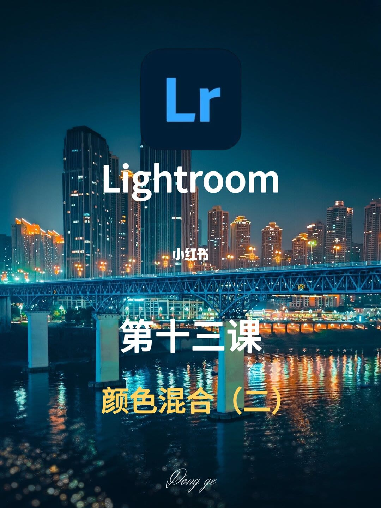
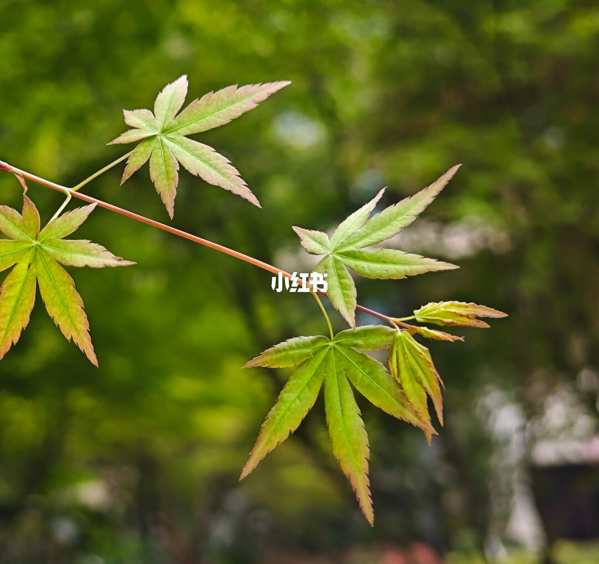
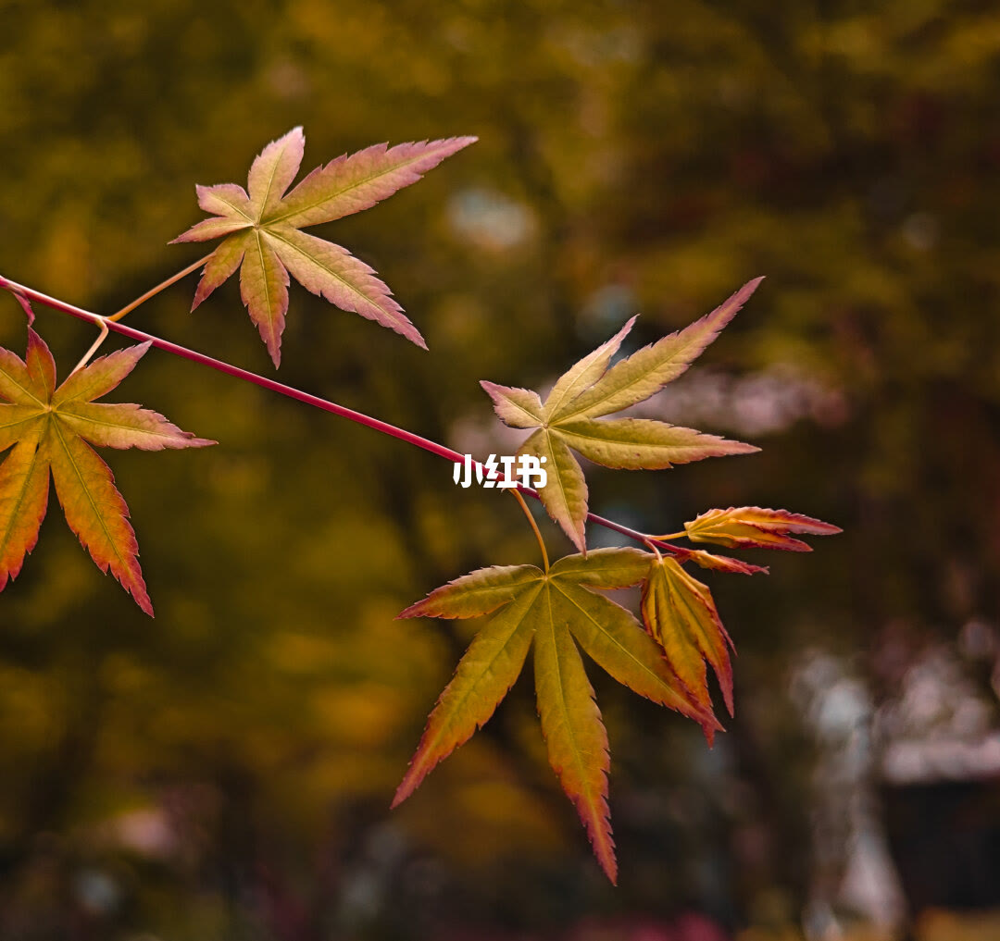
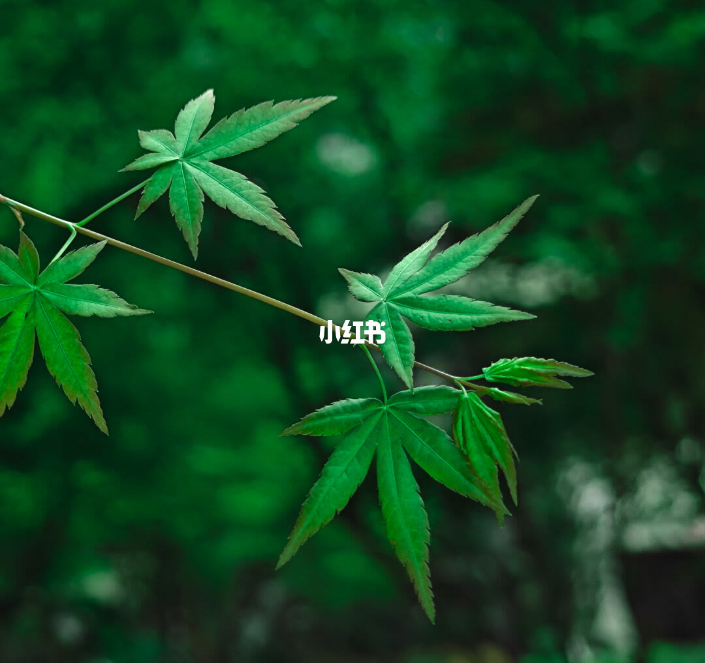
5/17–8/17第5/17页：一招告别小白称号|LR 颜色混合实
[种草R]家人们👋，今天来给大家分享超简单的LR调色技巧，颜色“混合”工具实战片，轻松把枫叶原图调出不同风格，让春天秒变秋天或夏天🍁，小白也能秒上手，赶紧学起来！ 🌟先来看看案例 图2是枫叶原图，颜色以绿色、橙色、红色为主，整体偏黄绿。图3、图4是调色后的成片。 🎯分析图3：秋天风格 这张图整体偏红橙色，春天的感觉一下子就变成秋天啦🍂。 [种草R]思路：把绿色调为红橙色，去掉其他没用的颜色。 [向右R]回忆一下“混合”工具里“红、橙、黄、绿、青、蓝、紫、洋红”的变色规律：往横条左边拉，颜色就往左边色彩方向变；往右边拉，就往右边色彩方向变。 [彩虹R]实操步骤来咯👇 [向右R]红色、橙色咱要保留，先别动它们 [向右R]要调出红橙色，把黄色往左拉，就变成橙色啦，然后根据自己喜好调整下饱和度和明亮度（图5） [向右R]绿色不要，往左拉向橙色方向调整，加点饱和度，降低明亮度，让它更接近橙色（图6） [向右R]青、蓝、紫图里本来没有，不确定的话，直接把它们饱和度拉到-100（图7） [向右R]洋红图片里没有，不用管，如果有就往右拉，让它变成红色 [向右R]最后再返回去对红色、橙色
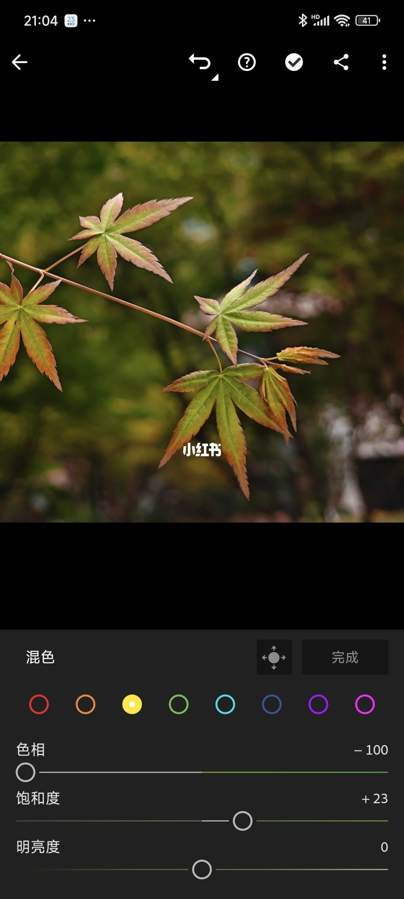
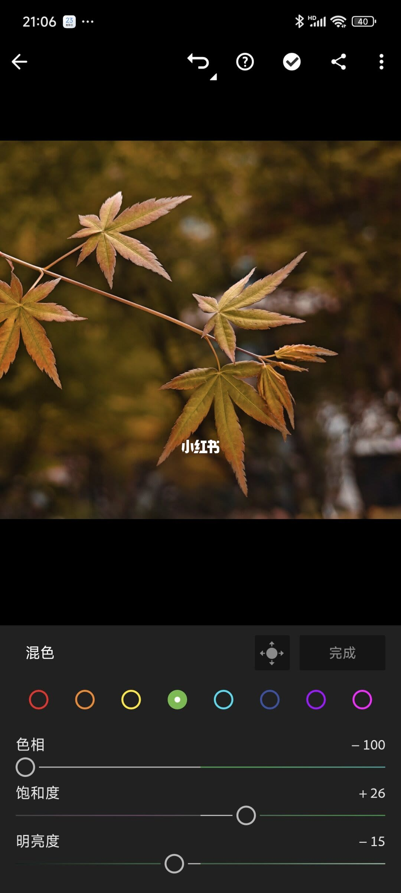
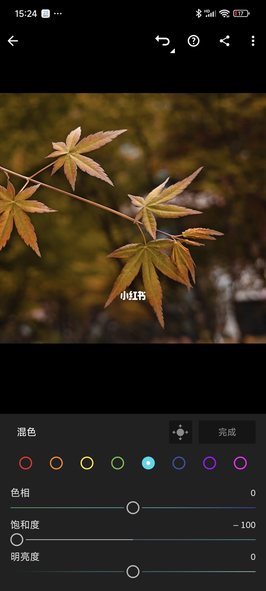
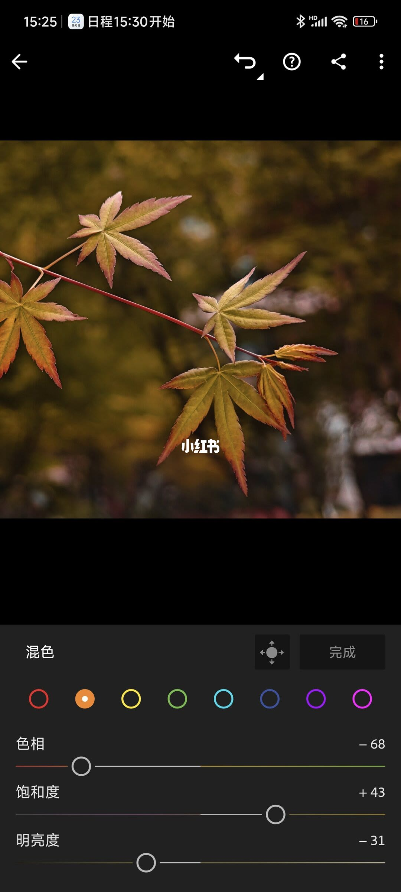
9/17–12/17第9/17页：一招告别小白称号|LR 颜色混合实
[种草R]家人们👋，今天来给大家分享超简单的LR调色技巧，颜色“混合”工具实战片，轻松把枫叶原图调出不同风格，让春天秒变秋天或夏天🍁，小白也能秒上手，赶紧学起来！ 🌟先来看看案例 图2是枫叶原图，颜色以绿色、橙色、红色为主，整体偏黄绿。图3、图4是调色后的成片。 🎯分析图3：秋天风格 这张图整体偏红橙色，春天的感觉一下子就变成秋天啦🍂。 [种草R]思路：把绿色调为红橙色，去掉其他没用的颜色。 [向右R]回忆一下“混合”工具里“红、橙、黄、绿、青、蓝、紫、洋红”的变色规律：往横条左边拉，颜色就往左边色彩方向变；往右边拉，就往右边色彩方向变。 [彩虹R]实操步骤来咯👇 [向右R]红色、橙色咱要保留，先别动它们 [向右R]要调出红橙色，把黄色往左拉，就变成橙色啦，然后根据自己喜好调整下饱和度和明亮度（图5） [向右R]绿色不要，往左拉向橙色方向调整，加点饱和度，降低明亮度，让它更接近橙色（图6） [向右R]青、蓝、紫图里本来没有，不确定的话，直接把它们饱和度拉到-100（图7） [向右R]洋红图片里没有，不用管，如果有就往右拉，让它变成红色 [向右R]最后再返回去对红色、橙色
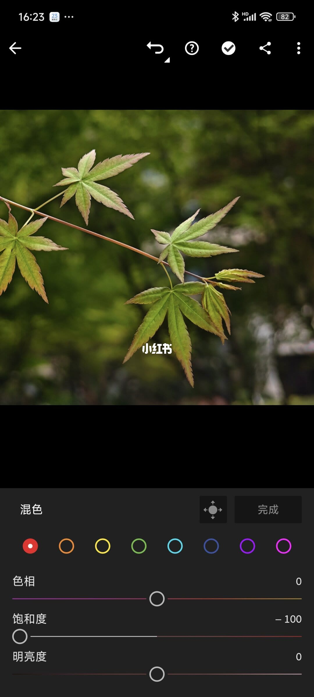
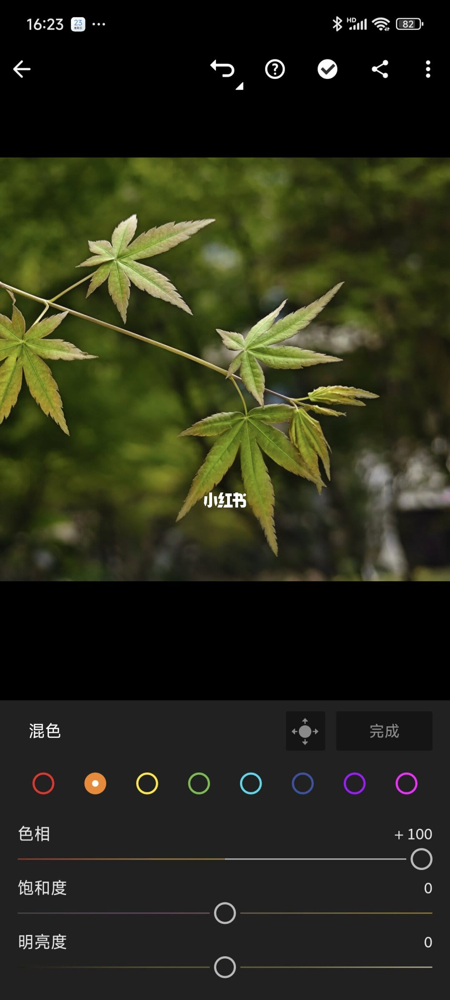
13/17–16/17第13/17页：一招告别小白称号|LR 颜色混合
[种草R]家人们👋，今天来给大家分享超简单的LR调色技巧，颜色“混合”工具实战片，轻松把枫叶原图调出不同风格，让春天秒变秋天或夏天🍁，小白也能秒上手，赶紧学起来！ 🌟先来看看案例 图2是枫叶原图，颜色以绿色、橙色、红色为主，整体偏黄绿。图3、图4是调色后的成片。 🎯分析图3：秋天风格 这张图整体偏红橙色，春天的感觉一下子就变成秋天啦🍂。 [种草R]思路：把绿色调为红橙色，去掉其他没用的颜色。 [向右R]回忆一下“混合”工具里“红、橙、黄、绿、青、蓝、紫、洋红”的变色规律：往横条左边拉，颜色就往左边色彩方向变；往右边拉，就往右边色彩方向变。 [彩虹R]实操步骤来咯👇 [向右R]红色、橙色咱要保留，先别动它们 [向右R]要调出红橙色，把黄色往左拉，就变成橙色啦，然后根据自己喜好调整下饱和度和明亮度（图5） [向右R]绿色不要，往左拉向橙色方向调整，加点饱和度，降低明亮度，让它更接近橙色（图6） [向右R]青、蓝、紫图里本来没有，不确定的话，直接把它们饱和度拉到-100（图7） [向右R]洋红图片里没有，不用管，如果有就往右拉，让它变成红色 [向右R]最后再返回去对红色、橙色
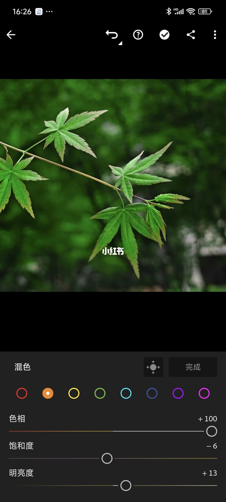
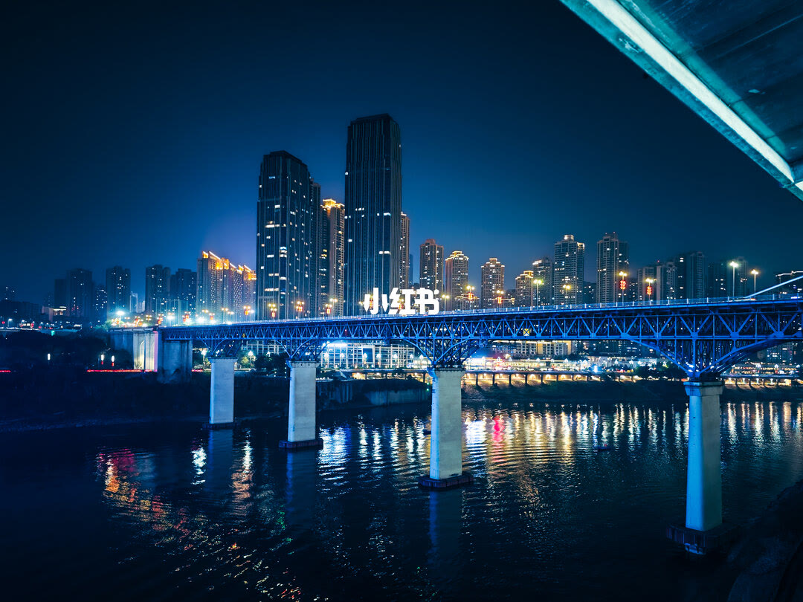
17/17–17/17第17/17页：一招告别小白称号|LR 颜色混合
[种草R]家人们👋，今天来给大家分享超简单的LR调色技巧，颜色“混合”工具实战片，轻松把枫叶原图调出不同风格，让春天秒变秋天或夏天🍁，小白也能秒上手，赶紧学起来！ 🌟先来看看案例 图2是枫叶原图，颜色以绿色、橙色、红色为主，整体偏黄绿。图3、图4是调色后的成片。 🎯分析图3：秋天风格 这张图整体偏红橙色，春天的感觉一下子就变成秋天啦🍂。 [种草R]思路：把绿色调为红橙色，去掉其他没用的颜色。 [向右R]回忆一下“混合”工具里“红、橙、黄、绿、青、蓝、紫、洋红”的变色规律：往横条左边拉，颜色就往左边色彩方向变；往右边拉，就往右边色彩方向变。 [彩虹R]实操步骤来咯👇 [向右R]红色、橙色咱要保留，先别动它们 [向右R]要调出红橙色，把黄色往左拉，就变成橙色啦，然后根据自己喜好调整下饱和度和明亮度（图5） [向右R]绿色不要，往左拉向橙色方向调整，加点饱和度，降低明亮度，让它更接近橙色（图6） [向右R]青、蓝、紫图里本来没有，不确定的话，直接把它们饱和度拉到-100（图7） [向右R]洋红图片里没有，不用管，如果有就往右拉，让它变成红色 [向右R]最后再返回去对红色、橙色
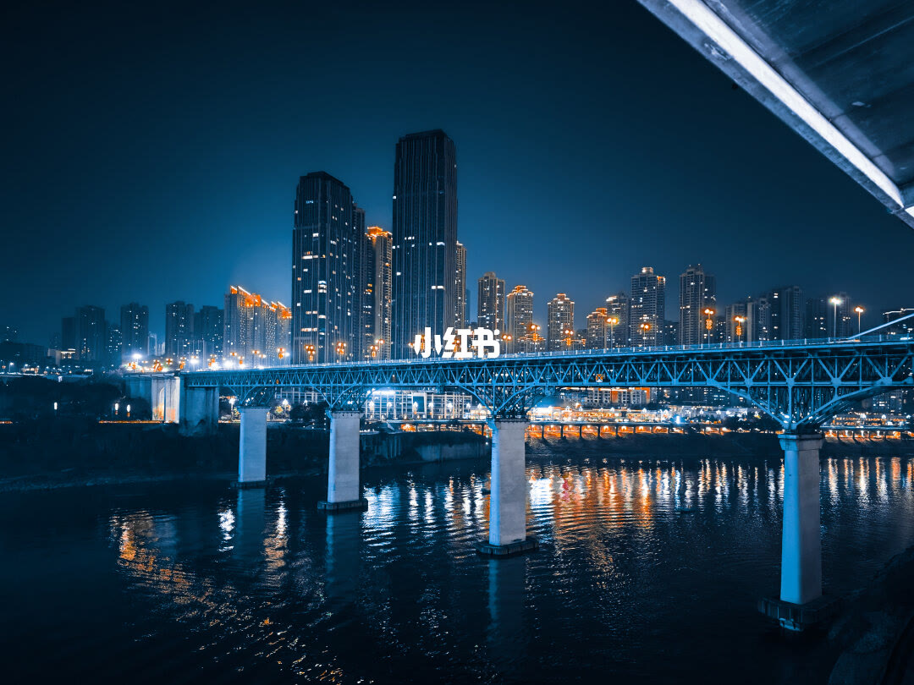
口述/画面要点（17段）
结合 Whisper medium 与画面大字整理；专有名词已校对。
封面/要点：[种草R]家人们👋，今天来给大家分享超简单的LR调色技巧，颜色“混合”工具实战片
第2/17页：一招告别小白称号|LR 颜色混合实战来了！
第3/17页：一招告别小白称号|LR 颜色混合实战来了！
第4/17页：一招告别小白称号|LR 颜色混合实战来了！
第5/17页：一招告别小白称号|LR 颜色混合实战来了！
第6/17页：一招告别小白称号|LR 颜色混合实战来了！
第7/17页：一招告别小白称号|LR 颜色混合实战来了！
第8/17页：一招告别小白称号|LR 颜色混合实战来了！
第9/17页：一招告别小白称号|LR 颜色混合实战来了！
第10/17页：一招告别小白称号|LR 颜色混合实战来了！
第11/17页：一招告别小白称号|LR 颜色混合实战来了！
第12/17页：一招告别小白称号|LR 颜色混合实战来了！
第13/17页：一招告别小白称号|LR 颜色混合实战来了！
第14/17页：一招告别小白称号|LR 颜色混合实战来了！
第15/17页：一招告别小白称号|LR 颜色混合实战来了！
第16/17页：一招告别小白称号|LR 颜色混合实战来了！
第17/17页：一招告别小白称号|LR 颜色混合实战来了！